Editing the PCR File
Here we will use FullProf PCR Editor (Graphical User Interface) to edit the PCR file.
-
Click the ED PCR button in the FullProf Suite Toolbar:
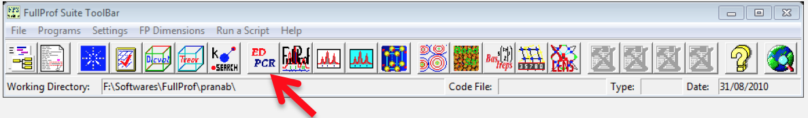
-
Following window will appear:
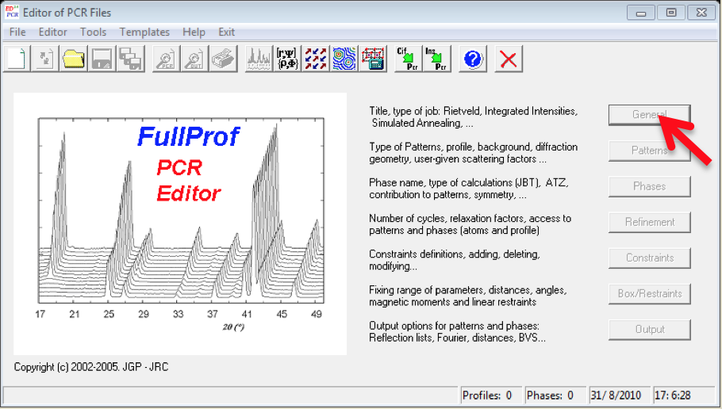
-
Now, go to File >> Open…, a browser window will appear, browse the PCR file which we have created earlier.
-
Click in the General TAB, give a title (say, CeMg3) and click OK.
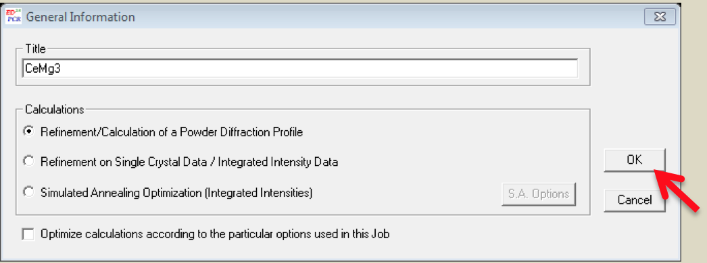
-
Then go to Patterns TAB in the Editor of the PCR File, following window will appear:
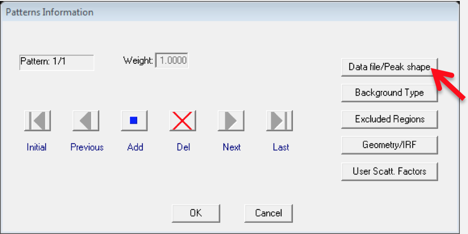
-
Click the Data file/Peak shape button:
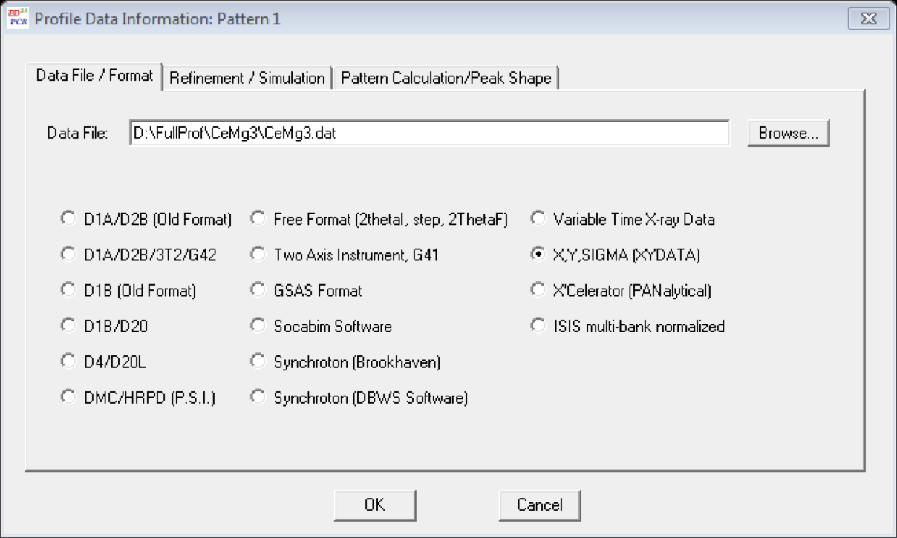
-
Another pop-up window will appear, in the Data File/Format TAB browse the data file, in our case
D:\FullProf\CeMg3\CeMg3.dat -
Next, go to Refinement/Simulation TAB, put λ2=1.5444 and (I_2/I_1)=0.5 (specific to my case)
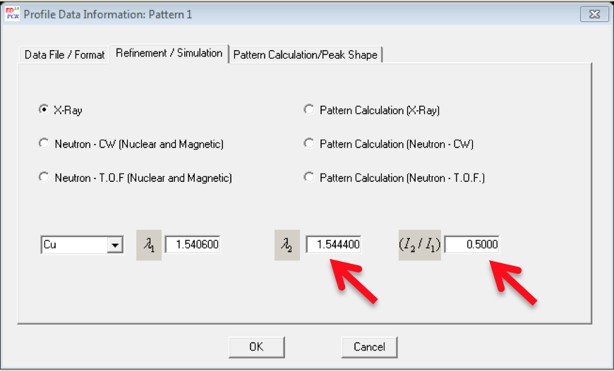
-
Click OK in the Profile Data Information Pattern window.
-
Now click in the Background Type button in the Pattern Information window, following window will appear, select 6-Coefficients polynomial function and click OK.
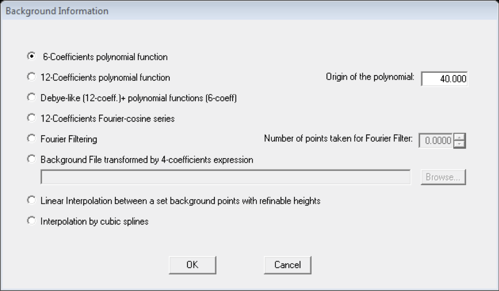
-
Now, click in the Excluded regions button and enter excluded regions in the pop-up window, in our case, 0 - 10 and 80 - 180 are the excluded regions.
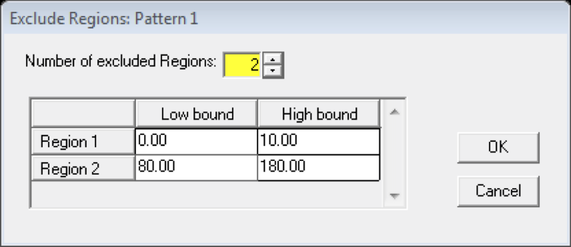
-
Click OK in the Exclude Regions window and in the Patter Information window.
-
Next, come to the Phases button in the Editor of PCR Files and click Symmetry button in the pop-up
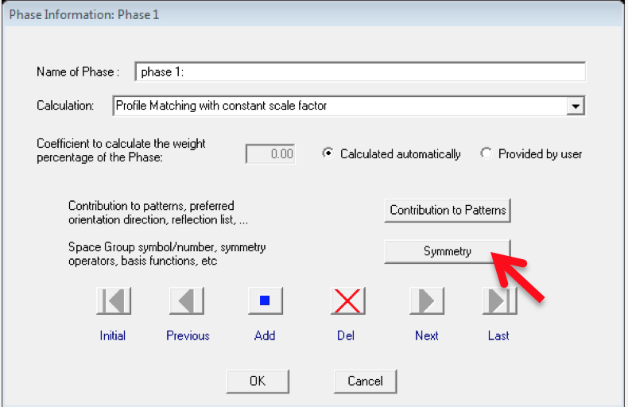
-
Enter the SpaceGroup information, in our case it is F m -3 m . Click OK >> OK
-
Now go to Refinement Button >> Instrumental button in the Refinement Information window.
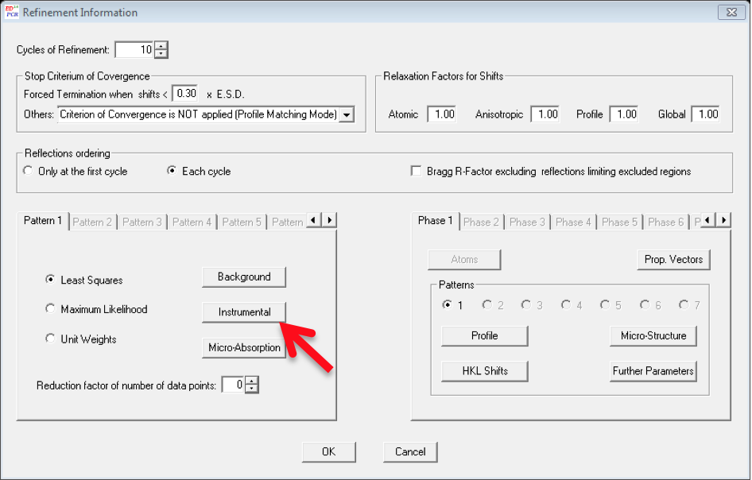
-
Select the Zero Check box and click OK. First, we are going to refine only the zero point of the detector.
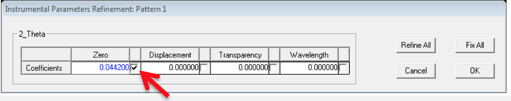
-
Click OK >> OK and come to the Editor of PCR Files window, go to File >> Save. Now you can exit the Editor window.